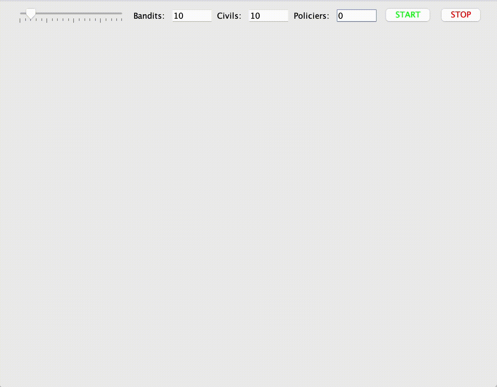
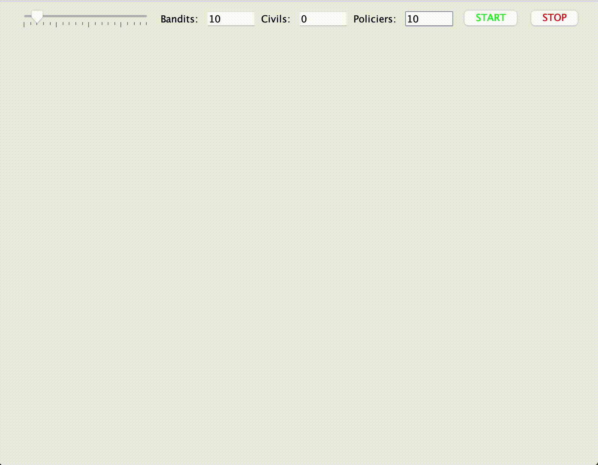

🥷 Agent n°1 : Les Bandits
Rôle : Les bandits sont des agents hostiles dont le rôle principal est d'agresser les civils.
Clique sur la flèche pour en apprendre plus sur l'Agent "Bandit".
⬇️
- Comportement de Base : Les bandits se déplacent de manière aléatoire dans l'environnement.
- Agression des Civils : Lorsqu'un bandit détecte un civil à proximité, il doit agresser le civil en se rapprochant de lui. L'agression peut varier en intensité, par exemple, en fonction de la distance entre le bandit et le civil.
- Interaction avec les Policiers : Les bandits peuvent être tués par les policiers s'ils sont à portée des policiers. Lorsqu'un bandit est tué, il doit disparaître de l'environnement.
- Attributs : Chaque bandit peut avoir des attributs tels que la position actuelle, la force, et une id unique.
- 
👮Agent n°2 : Les Policiers
Rôle : Les policiers sont des agents chargés de maintenir l'ordre en intervenant lors d'agressions entre les bandits et les civils.
Clique sur la flèche pour en apprendre plus sur l'Agent "Policier".
⬇️
- Comportement de Base : Les policiers se déplacent de manière aléatoire dans l'environnement.
- Intervention lors d'Agressions : Lorsqu'un policier détecte une agression entre un bandit et un civil à proximité, il doit intervenir en se rapprochant de l'agression et en tuant le bandit pour protéger le civil. L'intervention peut être plus rapide si le policier est plus proche de l'agression.
- Communication : Les policiers peuvent communiquer avec d'autres policiers pour coordonner leurs actions.
- Attributs : Chaque policier peut avoir des attributs tels que la position actuelle, la capacité de tir, et une id unique.
- 
👨💼Agent n°3 Les Civils
Rôle : Les civils représentent la population ordinaire de votre environnement. Leur principal rôle est de se déplacer de manière aléatoire dans l'environnement.
Clique sur la flèche pour en apprendre plus sur l'Agent "Policier".
⬇️
- Comportement de Base : Les civils se déplacent de manière aléatoire, en choisissant une nouvelle position après un certain intervalle de temps.
- Réaction au Danger : Lorsqu'un civil détecte un danger ou une agression à proximité (par exemple, la présence d'un bandit à une certaine distance), il doit réagir en s'écartant du danger. Le degré de réaction peut varier en fonction de la proximité du danger.
- Communication : Les civils peuvent communiquer avec d'autres civils à proximité pour alerter sur la présence de bandits ou de policiers.
- Attributs : Chaque civil peut avoir des attributs tels que la position actuelle, son état (en vie ou non), et une id unique.